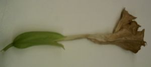
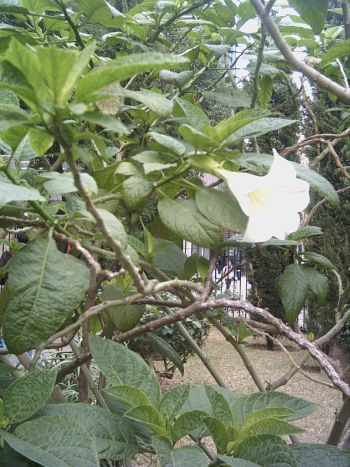
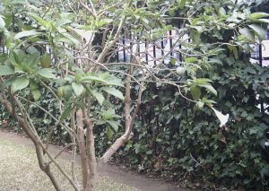

Flora
ornamental
del Campus de Reina Mercedes, Universidad de Sevilla - Ficha nº 88
- Versión 1
|
Datura suaveolens Humb. & Bonpl. ex Willd., Enum. Pl. 1: 227 (1809) Brugmansia suaveolens |
|
|
Trompeta del
juicio final, floripondio blanco |
Arbusto perennifolio |
|
Arbusto caducifolio, de 0,8-3,1 m de altura en el campus, con tallos blandos y suculentos. Hojas alternas, pecioladas, simples; lámina de 21 x 10 cm, enteras, elíptico-lanceolada, con la base
asimétrica y el envés pubescente. Flores hermafroditas, solitarias, pedunculadas, péndulas; cáliz tubular, con 5 dientes; corola de unos 15 cm, infundibuliforme, con 5 dientes, de color blanco; androceo con 5 estambres, con las anteras connadas; gineceo con 5 carpelos. Fruto de tipo cápsula, fusiforme, bilocular, con numerosas semillas arriñonadas.  |
 |
|
 |
Observaciones: |
|
Área de origen: No se conoce en estado silvestre y se
supone que se ha originado en
cultivo a partir de plantas procedentes de Brasil. Algunos expertos
opinan que el género Datura y
el genero Brugmansia son géneros distintos. |
|
|
Uso en el campus: 2 ejemplares dentro del Campus y 2 en el Colegio Mayor Hernando Colón, como planta ornamental. |
Localización: Escuela Universitaria de
Arquitectura Técnica: jardín exterior Colegio
Mayor Hernando Colon
|
|
|
|
| Sara Varona Baena
& Carlos Romero Zarco, 2008 |
|